Relaxation
Arizona is a great place to unwind and de-stress. If relaxation is what you’re looking for, you came to the right place! Enjoy peaceful desert landscapes, beautiful sunsets, relaxing resorts, and refreshing spa experiences. Whether you want to soak up the sun, take a quiet walk through the desert, or spend the day at a relaxing resort, Arizona has plenty of ways to slow down and recharge. Take a break from the busy world and enjoy the calm, natural beauty Arizona has to offer.
Here’s some things you can add to your itinerary:
Outdoor Spa & Resort — Fairmont Scottsdale Princess
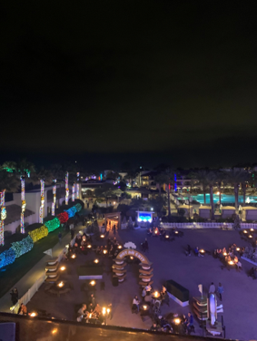
Unwind in the heart of the Sonoran Desert at the Fairmont Scottsdale Princess. Between the sun-drenched pools, private cabanas, and open desert views, it's built for slowing down. Families have plenty to keep them busy across the property, while the Well & Being Spa offers a quiet, adults-only retreat.
Lowell Observatory (Flagstaff)
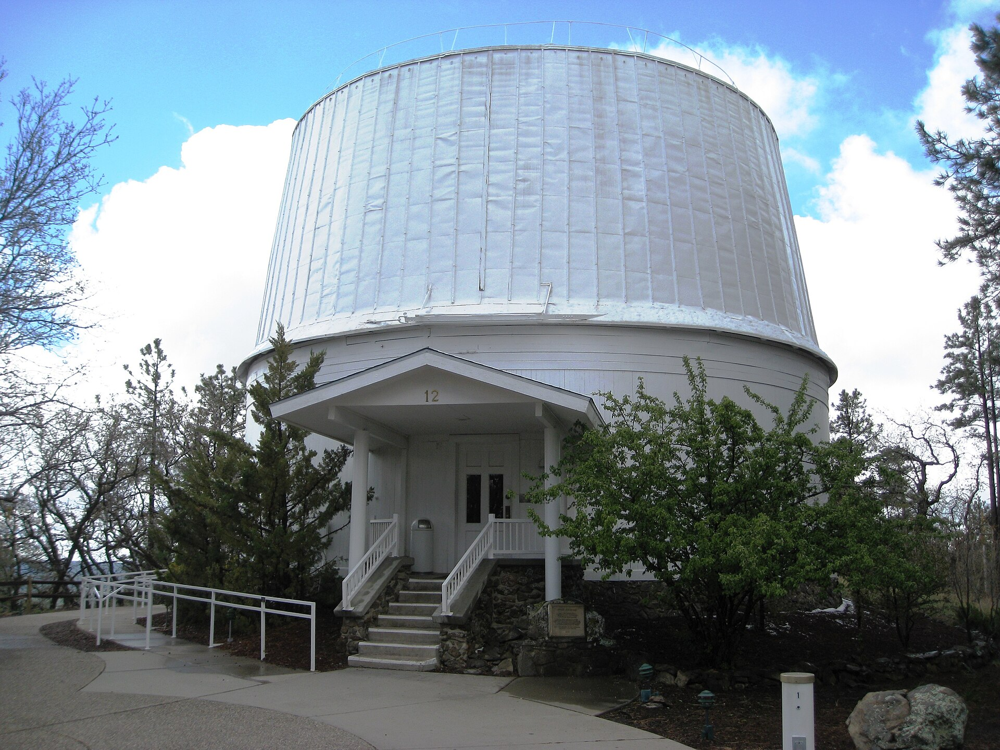
Flagstaff’s dark-sky designation makes it excellent for stargazing. Located in the pines at 7,000 feet, the observatory offers views through both historic and modern telescopes. Pack a warm jacket regardless of the season, as nighttime temperatures drop quickly.
Butterfly Wonderland & OdySea Aquarium (Scottsdale)
Sitting side by side off the Loop 101, these two attractions share a complex and offer combo ticketing. Butterfly Wonderland features a climate-controlled rainforest atrium, while OdySea is a multi-level aquarium with underwater tunnels. Together, they make for an easy, air-conditioned half-day stop for families.
Salt River Floating & Rafting
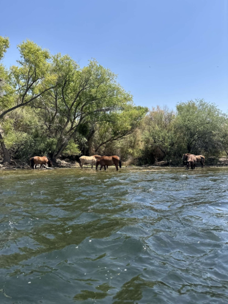
Floating the Lower Salt River offers desert canyon views and frequent wild horse sightings along the banks. Tube floats and kayaks cover the calmer lower sections, while guided rafting trips run farther upstream. It’s a standard summer routine, but prepare for full sun exposure and bring plenty of water.
Adventure
Arizona is the perfect place for an exciting getaway. If adventure is what you’re looking for, you came to the right place! From seeing wild animals and exploring the Grand Canyon to hiking through the red rocks of Sedona and spending the day at a water park, Arizona has something for every thrill-seeker. Whether you want to explore the outdoors, try something new, or spend the day filled with excitement, there are plenty of ways to make your trip unforgettable.
Here’s some things you can add to your itinerary:
Wildlife Adventure — Bearizona
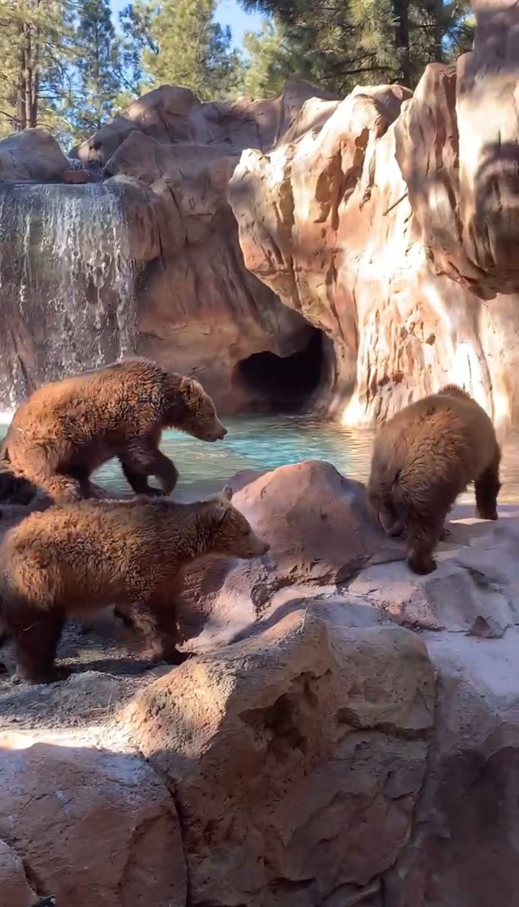
Get up close with wildlife at Bearizona in Williams, Arizona. Drive through the park to see animals such as bears, wolves, bison, and other North American wildlife in natural-looking habitats. You can also explore the walk-through areas for a closer look at some of the animals.
Grand Canyon
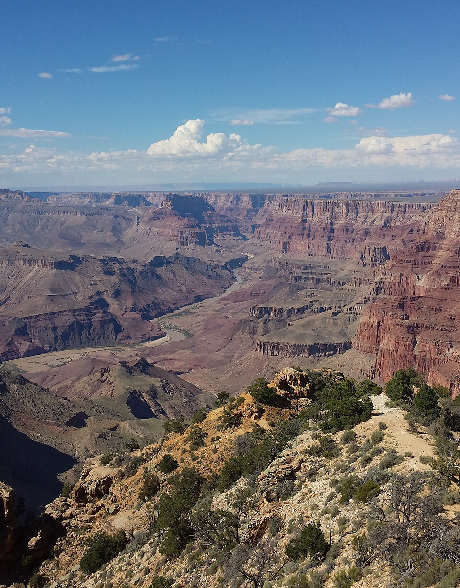
See one of the seven world wonders! You can look at the incredible views from the overlooks, hike along the canyon trails, or spend the day exploring the surrounding area. Whether you want a relaxing scenic experience or a more challenging hike, the Grand Canyon has plenty to offer.
Sedona Hiking
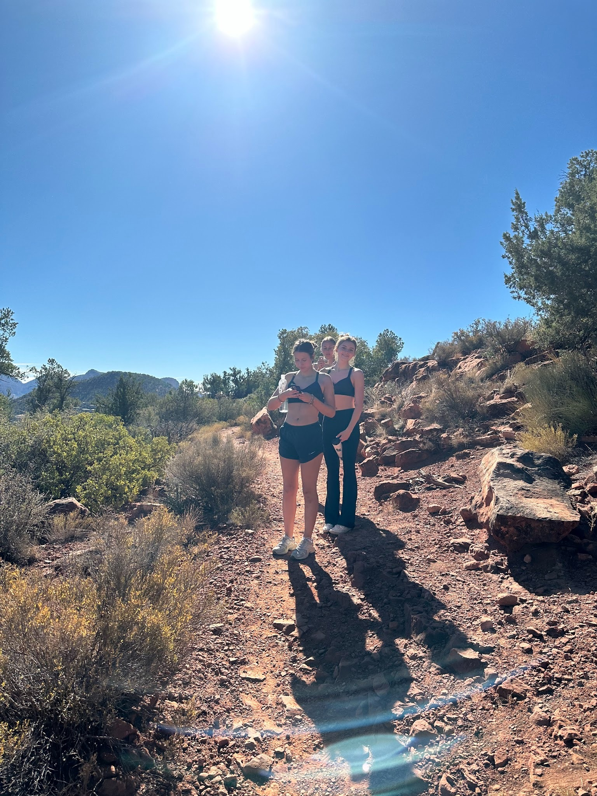
Explore Sedona’s famous red rocks by hiking through some of the area’s scenic trails. With beautiful views, unique rock formations, and trails for different experience levels, Sedona is a great place for anyone looking to get outside and explore Arizona’s natural landscape.
Water Park — Hurricane Harbor
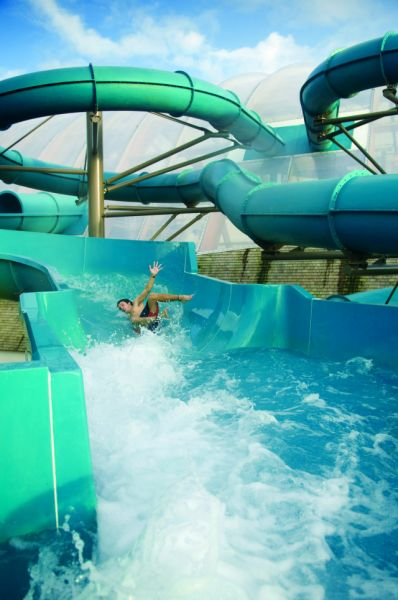
Cool off at Hurricane Harbor in Phoenix with water slides, pools, and attractions for all ages. It’s a great option for a fun-filled day, especially during Arizona’s hot summer months. Spend the day riding slides, relaxing in the water, and enjoying a break from the desert heat.
City Life
Arizona has plenty to offer if you enjoy shopping, entertainment, sports, and exploring busy city areas. If city life is what you’re looking for, you came to the right place! From shopping at popular malls and exploring Scottsdale to experiencing downtown Phoenix, there are plenty of ways to enjoy the city. Whether you want to spend the day shopping, go out for entertainment, explore local art, or watch a baseball game, Arizona has something for everyone.
Here’s some things you can add to your itinerary:
Shopping — Scottsdale Fashion Square & Scottsdale Quarter
Spend the day shopping, eating, and exploring at Scottsdale Fashion Square and Scottsdale Quarter. Both areas offer a variety of stores, restaurants, and entertainment, making them great places to spend an afternoon or evening.
Entertainment — Talking Stick Resort & Casino
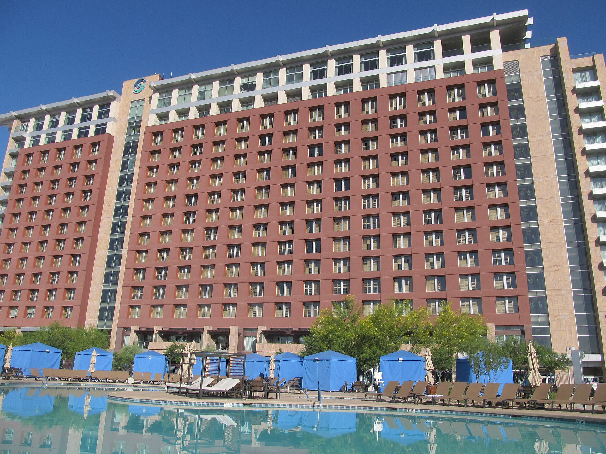
Visit Talking Stick Resort & Casino in Scottsdale for entertainment, dining, and activities. The resort offers a variety of things to do, making it a popular destination for visitors looking to experience Arizona’s entertainment scene.
Downtown Phoenix & First Friday
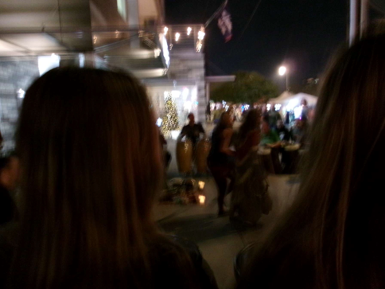
Explore downtown Phoenix and experience the city’s local art, food, and entertainment. On the first Friday of each month, First Friday brings together artists, galleries, local businesses, food vendors, and live entertainment for a fun way to experience the city.
Sports — Arizona Diamondbacks
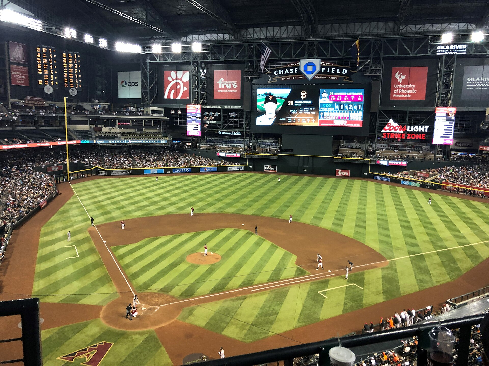
Catch an Arizona Diamondbacks baseball game at Chase Field in downtown Phoenix. You can grab some food, watch the game, and experience the excitement of professional baseball while spending time in the heart of the city.
Culture
Arizona has a rich and diverse culture shaped by Native American traditions, Mexican and Mexican-American heritage, art, and history. If you’re interested in experiencing the culture of Arizona, you’re in the right place! From visiting museums and historic neighborhoods to learning about Indigenous communities and exploring local art, there are so many ways to experience the people, traditions, and history that make Arizona unique.
Navajo Culture & Land — Antelope Canyon
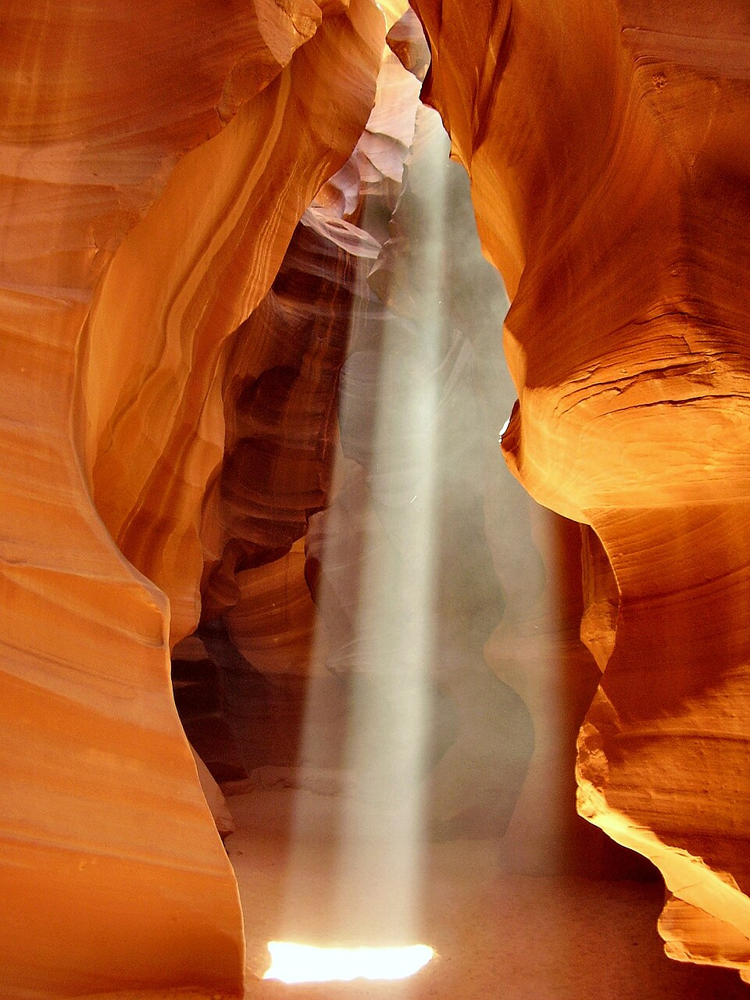
Explore the incredible sandstone formations of Antelope Canyon, located on Navajo Nation land near Page, Arizona. Guided tours led by Navajo guides give visitors the chance to see the canyon while learning about its history, geology, and importance to the Navajo people.
Old Tucson — Historic Arizona
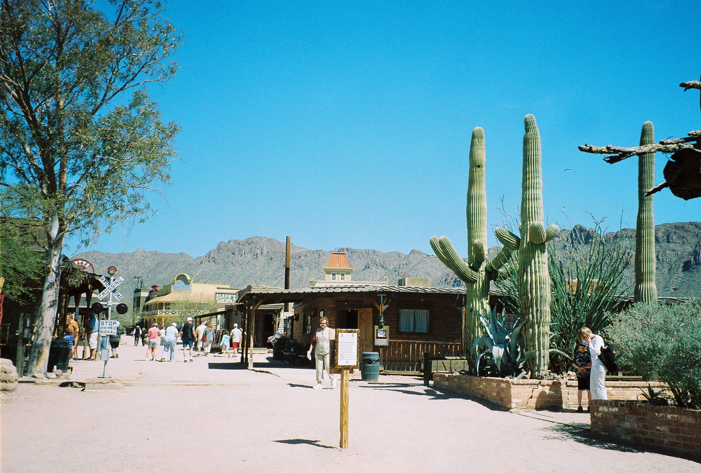
Step back in time at Old Tucson, a Western-themed attraction that brings Arizona’s Old West history to life. Explore historic-style buildings, learn about Arizona’s past, and experience the look and feel of an old Western town.
Mexican-American Culture — Barrio Viejo

Take a walk through Barrio Viejo in Tucson, a historic neighborhood filled with colorful buildings, unique architecture, local restaurants, and a strong connection to Tucson’s Mexican-American heritage.